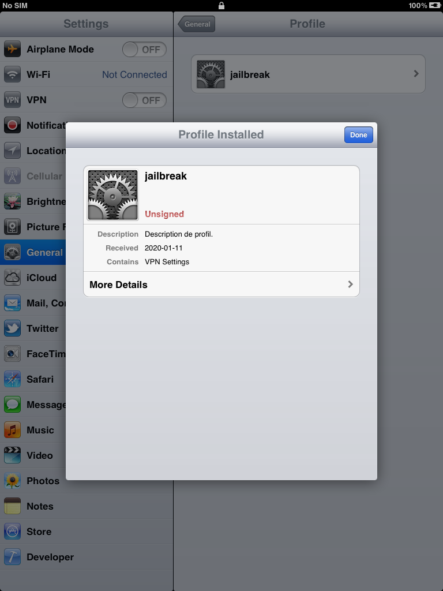

Prepare on-device workspace
In this section, we will jailbreak the device then install some useful tools.
Since this iBoot exploit is related to filesystem, we need to have full access to the disk device in order to be able to control data on it. Accessing disk at block level usually requires root privileges, so you need unsigned code execution somewhere else on your iOS device first then run a jailbroken kernel. This can be acheived by another low-level exploit (such as Limera1n for A4) with a SSH ramdisk or any other userland jailbreak.
For iOS 5.0.1 on iPad 2nd, we will use redsn0w and Corona 5.0.1 untether. This jailbreak patches task_for_pid0, so we will be ready to use kloader later in this writeup.
Connect your device on your computer, then open Redsn0w.
Your device should be detected. Click the "Jailbreak" button then follow the instructions.

 After device is rebooted, you should see that magical icon on the next home screen page.
After device is rebooted, you should see that magical icon on the next home screen page.
Open Cydia, then add the following source.
http://www.pmbonneau.com/cydia
Install those packages on your device.
- OpenSSH
- hfsresize
- gptfdisk
- kloader
- nano
Important note
I noticed that my Cydia repository can't be used anymore on iOS 5.x (and probably older firmwares) since my website is using SSL. You will get the following error message and the added repository will be empty.
Until I find an efficient solution to fix this issue, here is a workaround. We will manually install the required packages on device using the dpkg command.
Download the following packages from your computer. Upload the downloaded packages to /tmp on device using SCP. From a SSH session on device, run the following command to install the package.
iPad-k94ap#dpkg -i [.deb package file]
If the installation has been successfully completed, the package should be listed in Cydia.